Norse Runes for Beginners: Elder Futhark Divination Guide
The Power of the Runes
The Norse runes are far more than an ancient alphabet. They are a system of divination, a tool for self-discovery, and a bridge to the wisdom of the Viking age. The oldest and most widely used runic system is the Elder Futhark, consisting of 24 distinct symbols, each with its own name, meaning, and magical correspondence.
According to Norse mythology, the god Odin discovered the runes after hanging for nine days and nights on Yggdrasil, the World Tree, pierced by his own spear. This myth underscores a fundamental truth about rune work: true knowledge demands sacrifice and perseverance. The runes are not quick answers — they are deep mirrors.
The Three Aetts of the Elder Futhark
The 24 runes are divided into three groups of eight, called aetts (families or clans), each named after the god or force that governs them:
Freyr's Aett (Runes 1-8): The Material World
- Fehu (F): Cattle, wealth, abundance, mobile assets. Represents beginning and the fuel for growth.
- Uruz (U): Aurochs, strength, endurance, primal power. Raw potential and physical vitality.
- Thurisaz (Th): Giant, thorn, defense. Protective force that can also destroy if misdirected.
- Ansuz (A): Odin, divine breath, communication. Wisdom, poetry, and inspired speech.
- Raidho (R): Journey, wheel, cosmic law. Travel, evolution, and right action.
- Kenaz (K): Torch, creative fire, transformation. Illumination, artistic inspiration, and controlled power.
- Gebo (G): Gift, partnership, sacrifice. Exchange, generosity, and the balance of giving and receiving.
- Wunjo (W): Joy, harmony, fellowship. Emotional fulfillment and the reward of alignment.
Heimdall's Aett (Runes 9-16): The Inner World
- Hagalaz (H): Hail, disruption, natural forces. Uncontrollable change that clears the way for renewal.
- Nauthiz (N): Need, constraint, necessity. Resistance that builds strength and teaches patience.
- Isa (I): Ice, stillness, preservation. Freezing of circumstances, meditation, and inner focus.
- Jera (J): Year, harvest, cyclic return. Reaping what you have sown, natural timing.
- Eihwaz (Eih): Yew tree, endurance, death and rebirth. Transformation through facing mortality.
- Perthro (P): Dice cup, mystery, fate. Hidden knowledge, luck, and the unpredictable elements of existence.
- Algiz (Z): Elk, protection, higher self. Spiritual defense and connection to divine consciousness.
- Sowilo (S): Sun, wholeness, success. Victory, clarity, and the realization of true potential.
Tyr's Aett (Runes 17-24): The Cosmic Order
- Tiwaz (T): Tyr, justice, sacrifice. Righteous action, ethical leadership, and the courage to fight for truth.
- Berkano (B): Birch, fertility, growth. Nurturing, new beginnings, and the gentle unfolding of life.
- Ehwaz (E): Horse, partnership, trust. Cooperation, loyalty, and the harmonious relationship of rider and steed.
- Mannaz (M): Human, community, self. Collective consciousness, social bonds, and the human condition.
- Laguz (L): Water, flow, intuition. Emotional depth, the subconscious, and the wisdom of the unconscious.
- Ingwaz (Ng): Ing (Freyr), fertility, seed. Inner growth, potential waiting to be realized, and male fertility.
- Dagaz (D): Day, breakthrough, awakening. Radical transformation, clarity after darkness.
- Othala (O): Ancestral property, heritage, inheritance. Home, family, and the values passed down through generations.
How to Cast Runes
Single Rune Daily Draw
The simplest method. Pull one rune each morning as a focus for the day. Reflect on its meaning during quiet moments. This builds familiarity with each symbol's energy.
Three Rune Spread (Past, Present, Future)
Draw three runes in sequence: the first represents your past (the root of the situation), the second your present (the current energy), and the third your future (the likely outcome or guidance).
Odin's Rune
Cast all 24 runes onto a cloth. The single rune that lands facing up or closest to you is Odin's message — a direct answer to your specific question.
Runes in Chaos Magick Practice
Chaos magicians incorporate runes as a flexible, powerful symbolic system. Each rune can be used as a standalone sigil, charged through gnosis and fired into the subconscious. Rune combinations create bindrunes — composite sigils that encode complex intentions. The Norse Rune Oracle app by Cha0smagick Labs takes this further with 12+ spreads, a complete rune library, and an immersive Norse interface.
Cast runes anywhere with the premium Norse Rune Oracle app.
12+ spreads, complete Elder Futhark library, guided interpretations — all offline, no ads.
Get the Norse Rune Oracle →Try It Free Online
You can cast the Viking Runes Oracle for free online. Experiment with different spreads and see what the runes reveal before committing to the full app experience.
Try the Free Online Rune Oracle →
Frequently Asked Questions
Do I need to be of Norse descent to use runes?
No. Runes are a human symbolic system accessible to any sincere practitioner. Respect for the tradition matters more than ancestry.
Do runes have reversed meanings?
Many readers use reversed (upside-down) positions as additional nuance. In the Norse Rune Oracle app, you can toggle reversals on or off depending on your preferred reading style.